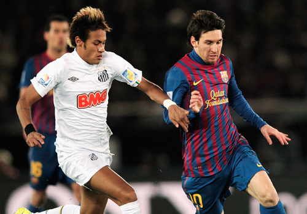
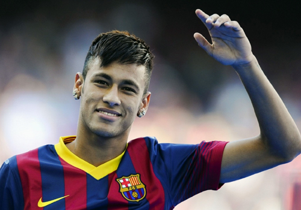

Neymar da Silva Santos Júnior, commonly known as Neymar, is a Brazilian footballer who recently played in the Brasileirão Série A for Santos and the Brazilian national team, mainly as a forward. Neymar is now playing for Barcelona, a Spanish Team in La Liga(National League), after the team spent a whopping €57 million Euros.
Gallery
View some of the most famous photos of Neymar.
- 

- 